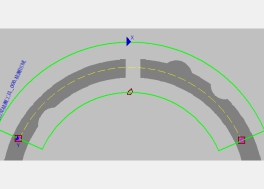
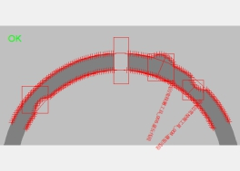
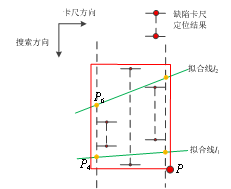
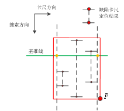
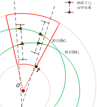
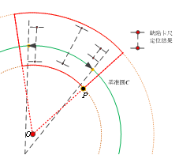
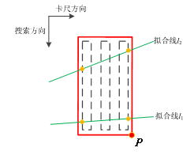
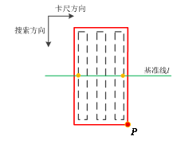
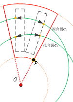
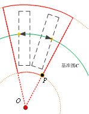

Công cụ kiểm tra độ rộng biên đường cong áp dụng cho các loại biên đường cong bất kỳ, sử dụng một nhóm thước cặp để định vị chính xác đặc trưng biên và khớp biên đường cong; dựa trên vị trí biên của thước cặp và kết quả khớp để kiểm tra tính đồng đều của độ rộng giữa hai biên, kiểm tra xem độ rộng có bất thường hay không (quá rộng hoặc quá hẹp), đồng thời kiểm tra xem có tồn tại đứt gãy hay không. Sơ đồ kiểm tra độ rộng biên đường cong như Hình 1.


| Phân loại | Tên tham số | Mô tả tham số |
|---|---|---|
| Cửa sổ thuộc tính | Có nhập dữ liệu đường keo hay không | Có: có thể cấu hình dữ liệu đường keo đầu vào; Không: không thể cấu hình dữ liệu đường keo đầu vào |
| Cực tính biên 1 | Cực tính của biên lý tưởng 1, gồm 3 loại: cực tính bất kỳ, sáng sang tối và tối sang sáng. | |
| Cực tính biên 2 | Cực tính của biên lý tưởng 2, gồm 3 loại: cực tính bất kỳ, sáng sang tối và tối sang sáng. | |
| Ngưỡng tương phản | Công cụ thước cặp mặc định chỉ sử dụng điểm đánh giá độ tương phản, tức là chấm điểm theo cường độ tín hiệu biên và xuất ra điểm có biên mạnh nhất. Phạm vi của ngưỡng tương phản là 0~255. | |
| Nửa độ rộng bộ lọc | Trong quá trình khớp, công cụ thước cặp sẽ lọc ảnh để tăng cường thông tin biên, trong đó nửa độ rộng bộ lọc có thể điều chỉnh, giá trị mặc định là 1. Phạm vi: [1,20] | |
| Tham số thước cặp có đồng nhất hay không | Người dùng có thể chọn có thiết lập tham số thước cặp riêng theo từng đoạn hay không thông qua tham số này. Chọn “Có”, thước cặp ở các đoạn sử dụng cùng một tham số; chọn “Không”, thước cặp ở các đoạn sử dụng các tham số khác nhau, đồng thời hiển thị tham số số thứ tự thước cặp. |
|
| Số thứ tự thước cặp | Trong công cụ kiểm tra độ rộng biên đường cong, để thích ứng với độ phức tạp của đường cong, có thể thiết lập nhiều đoạn thước cặp và cấu hình các tham số kiểm tra khuyết tật khác nhau cho từng đoạn thước cặp. Số thứ tự thước cặp hiện tại cho biết thước cặp hiện đang được chọn, các tham số kiểm tra khuyết tật bên dưới đều áp dụng cho đoạn thước cặp này. |
|
| Độ rộng tối thiểu | Phạm vi độ rộng bình thường giữa biên lý tưởng 1 và biên lý tưởng 2 là [dmin,dmax], dmin là độ rộng tối thiểu; nếu độ rộng nhỏ hơn giá trị này thì được phán định là khuyết tật (khuyết tật hẹp). Phạm vi: (0,Độ rộng tối đa) | |
| Độ rộng tối đa | Phạm vi độ rộng bình thường giữa biên lý tưởng 1 và biên lý tưởng 2 là [dmin,dmax], dmax là độ rộng tối đa; nếu độ rộng lớn hơn giá trị này thì được phán định là khuyết tật (khuyết tật rộng). Phạm vi: (Độ rộng tối thiểu,1000000.0) | |
| Có bật kích thước hay không | Sau khi đánh dấu, sẽ sử dụng các tham số giới hạn trên/dưới của chiều dài duy trì khuyết tật hẹp/rộng và lọc kết quả khuyết tật dựa trên các tham số giới hạn trên/dưới của chiều dài duy trì khuyết tật hẹp/rộng. | |
| Giới hạn dưới chiều dài duy trì khuyết tật hẹp | Chiều dài duy trì tối thiểu để phán định là khuyết tật hẹp, lớn hơn giá trị này được xem là khuyết tật hẹp; nhỏ hơn giá trị này được xem là nhiễu và không ghi nhận là khuyết tật. Phạm vi: (0,Giới hạn trên chiều dài duy trì khuyết tật hẹp) | |
| Giới hạn trên chiều dài duy trì khuyết tật hẹp | Chiều dài duy trì tối đa để phán định là khuyết tật hẹp, nhỏ hơn giá trị này được xem là khuyết tật hẹp. Phạm vi: (Giới hạn dưới chiều dài duy trì khuyết tật hẹp,1000000.0) | |
| Giới hạn dưới chiều dài duy trì khuyết tật rộng | Chiều dài duy trì tối thiểu để phán định là khuyết tật rộng, lớn hơn giá trị này được xem là khuyết tật rộng; nhỏ hơn giá trị này được xem là nhiễu và không ghi nhận là khuyết tật. Phạm vi: (0,Giới hạn trên chiều dài duy trì khuyết tật rộng) | |
| Giới hạn trên chiều dài duy trì khuyết tật rộng | Chiều dài duy trì tối đa để phán định là khuyết tật rộng, nhỏ hơn giá trị này được xem là khuyết tật rộng. Phạm vi: (Giới hạn dưới chiều dài duy trì khuyết tật rộng,1000000.0) | |
| Có bật diện tích hay không | Sau khi đánh dấu, sẽ sử dụng các tham số giới hạn trên/dưới diện tích khuyết tật hẹp/rộng và lọc kết quả khuyết tật theo các tham số giới hạn trên/dưới diện tích khuyết tật hẹp/rộng. | |
| Giới hạn dưới diện tích khuyết tật hẹp | Diện tích tối thiểu để phán định là khuyết tật hẹp, lớn hơn giá trị này được xem là khuyết tật hẹp; phạm vi: (0,Giới hạn trên diện tích khuyết tật hẹp) | |
| Giới hạn trên diện tích khuyết tật hẹp | Diện tích tối đa để phán định là khuyết tật hẹp, nhỏ hơn giá trị này được xem là khuyết tật hẹp; phạm vi: (Giới hạn dưới diện tích khuyết tật hẹp,1000000.0) | |
| Giới hạn dưới diện tích khuyết tật rộng | Diện tích tối thiểu để phán định là khuyết tật rộng, lớn hơn giá trị này được xem là khuyết tật rộng; phạm vi: (0,Giới hạn trên diện tích khuyết tật rộng) | |
| Giới hạn trên diện tích khuyết tật rộng | Diện tích tối đa để phán định là khuyết tật rộng, nhỏ hơn giá trị này được xem là khuyết tật rộng; phạm vi: (Giới hạn dưới diện tích khuyết tật rộng,1000000.0) | |
| Lọc khuyết tật hẹp | Độ rộng nhỏ hơn độ rộng bình thường được xem là khuyết tật hẹp. Khi tham số này chọn “Có”, có thể lọc bỏ khuyết tật hẹp khỏi kết quả khuyết tật. | |
| Lọc khuyết tật rộng | Độ rộng lớn hơn độ rộng bình thường được xem là khuyết tật rộng. Khi tham số này chọn “Có”, có thể lọc bỏ khuyết tật rộng khỏi kết quả khuyết tật. | |
| Có kiểm tra đứt gãy hay không | Chọn “Có” thì đồng thời kiểm tra khuyết tật và đứt gãy, đồng thời hiển thị các tham số như giới hạn trên/dưới chiều dài đứt gãy cho phép. | |
| Giới hạn dưới chiều dài đứt gãy cho phép | Khoảng cách đứt gãy tối thiểu, nếu nhỏ hơn khoảng cách này thì không được xem là đứt gãy. Phạm vi: (0,Giới hạn trên chiều dài đứt gãy cho phép) | |
| Giới hạn trên chiều dài đứt gãy cho phép | Khoảng cách đứt gãy tối đa, nếu lớn hơn khoảng cách này thì không được xem là đứt gãy. Phạm vi: (Giới hạn dưới chiều dài đứt gãy cho phép,1000000.0) | |
| Hiển thị kết quả theo thời gian thực | Chọn “Có”, sau khi sửa tham số công cụ thì không cần chạy công cụ vẫn có thể hiển thị kết quả theo thời gian thực; chọn “Không”, sau khi thay đổi tham số cần chạy công cụ mới hiển thị kết quả tương ứng. | |
| Có đảo kết quả hay không | Chọn “Có” thì đảo kết quả thực thi của công cụ, ví dụ kết quả là false, sau khi chọn đảo thì kết quả trở thành true và ngược lại. | |
| Số lượng khuyết tật tối đa | Giá trị tối đa của số lượng khuyết tật được phát hiện. Phạm vi: (0,1000000.0) | |
| Số lượng đứt gãy tối đa | Giá trị tối đa của số lượng kết quả đứt gãy, nếu số lượng đứt gãy vượt quá giá trị này thì các kết quả đứt gãy xếp phía sau sẽ bị lọc bỏ theo quy tắc sắp xếp đứt gãy. Phạm vi: (0,1000000.0) | |
| Cửa sổ ảnh | Vùng kiểm tra | Vùng hình chữ nhật có thể thay đổi trong ảnh tham gia kiểm tra. |
| Ảnh đầu vào | Hiển thị ảnh cần kiểm tra. | |
| Liên kết dữ liệu | Phép biến đổi tuyến tính 2D | Phép biến đổi tịnh tiến, xoay và tỷ lệ của đối tượng so với mẫu. |
| Dữ liệu đường keo đầu vào | Liên kết với đầu ra đường keo của công cụ chỉnh sửa đường keo | |
| Tỷ lệ pixel | Tham số đầu ra tỷ lệ pixel của công cụ hiệu chuẩn camera bằng target, tức là kích thước vật lý thực tế mà mỗi pixel đại diện, đơn vị mm. | |
| Tập điểm khớp biên 1 | Tập hợp các điểm khớp của biên trên | |
| Tập điểm khớp biên 2 | Hình học của các điểm khớp biên dưới | |
| Vùng khuyết tật | Sau khi đánh dấu, hiển thị các khuyết tật trong vùng kiểm tra của ảnh. | |
| Vùng đứt gãy | Sau khi đánh dấu, hiển thị các đứt gãy trong vùng kiểm tra của ảnh. | |
| Đoạn thẳng ngắn nhất | Giá trị độ rộng tối thiểu giữa biên lý tưởng 1 và biên lý tưởng 2. | |
| Đoạn thẳng dài nhất | Giá trị độ rộng tối đa giữa biên lý tưởng 1 và biên lý tưởng 2. | |
| Giao diện nâng cao | Cực tính biên 1 | Cực tính của biên lý tưởng 1, gồm 3 loại: cực tính bất kỳ, sáng sang tối và tối sang sáng. |
| Cực tính biên 2 | Cực tính của biên lý tưởng 2, gồm 3 loại: cực tính bất kỳ, sáng sang tối và tối sang sáng. | |
| Ngưỡng tương phản | Công cụ thước cặp mặc định chỉ sử dụng điểm đánh giá độ tương phản, tức là chấm điểm theo cường độ tín hiệu biên và xuất ra điểm có biên mạnh nhất. Phạm vi của ngưỡng tương phản là [0, 255]. | |
| Nửa độ rộng bộ lọc | Trong quá trình khớp, công cụ thước cặp sẽ lọc ảnh để tăng cường thông tin biên, trong đó nửa độ rộng bộ lọc có thể điều chỉnh, giá trị mặc định là 1, phạm vi là [1, 20]. |
|
| Số thứ tự thước cặp | Trong công cụ kiểm tra độ rộng biên đường cong, để thích ứng với độ phức tạp của đường cong, có thể thiết lập nhiều đoạn thước cặp và cấu hình các tham số kiểm tra khuyết tật khác nhau cho từng đoạn thước cặp. Số thứ tự thước cặp cho biết thước cặp hiện đang được chọn. |
|
| Tham số thước cặp có đồng nhất hay không | Người dùng có thể chọn có thiết lập tham số thước cặp riêng theo từng đoạn hay không thông qua tham số này. Đánh dấu, thước cặp ở các đoạn sử dụng cùng một tham số và tham số số thứ tự thước cặp không khả dụng; bỏ đánh dấu, thước cặp ở các đoạn sử dụng các tham số khác nhau. |
|
| Độ rộng tối thiểu | Phạm vi độ rộng bình thường giữa biên lý tưởng 1 và biên lý tưởng 2 là [dmin,dmax], dmin là độ rộng tối thiểu; nếu độ rộng nhỏ hơn giá trị này thì được phán định là khuyết tật (khuyết tật hẹp). Phạm vi: (0,Độ rộng tối đa) | |
| Độ rộng tối đa | Phạm vi độ rộng bình thường giữa biên lý tưởng 1 và biên lý tưởng 2 là [dmin,dmax], dmax là độ rộng tối đa; nếu độ rộng lớn hơn giá trị này thì được phán định là khuyết tật (khuyết tật rộng). Phạm vi: (Độ rộng tối thiểu,1000000.0) | |
| Giới hạn dưới chiều dài đứt gãy cho phép | Khoảng cách đứt gãy tối thiểu, nếu nhỏ hơn khoảng cách này thì không được xem là đứt gãy. Phạm vi: (0,Giới hạn trên chiều dài đứt gãy cho phép) | |
| Giới hạn trên chiều dài đứt gãy cho phép | Khoảng cách đứt gãy tối đa, nếu lớn hơn khoảng cách này thì không được xem là đứt gãy. Phạm vi: (Giới hạn dưới chiều dài đứt gãy cho phép,1000000.0) | |
| Có kiểm tra đứt gãy hay không | Chọn “Có” thì đồng thời kiểm tra khuyết tật và đứt gãy, đồng thời hiển thị các tham số như giới hạn trên/dưới chiều dài đứt gãy cho phép. | |
| Lọc khuyết tật hẹp | Độ rộng nhỏ hơn độ rộng bình thường được xem là khuyết tật hẹp. Khi tham số này chọn “Có”, có thể lọc bỏ khuyết tật hẹp khỏi kết quả khuyết tật. | |
| Lọc khuyết tật rộng | Độ rộng lớn hơn độ rộng bình thường được xem là khuyết tật rộng. Khi tham số này chọn “Có”, có thể lọc bỏ khuyết tật rộng khỏi kết quả khuyết tật. | |
| Tùy chọn nâng cao | Trên đây là các tham số cơ bản, sau khi đánh dấu tùy chọn nâng cao sẽ hiển thị các tham số nâng cao. | |
| Biên mạnh nhất | Chọn “Có” thì bật tiêu chí biên mạnh nhất để lấy biên tối ưu. Trong đó, không thể đồng thời chọn “Không” cho cả biên mạnh nhất và biên đầu tiên. | |
| Biên đầu tiên | Chọn “Có” thì bật tiêu chí biên đầu tiên để lấy biên tối ưu. Trong đó, không thể đồng thời chọn “Không” cho cả biên mạnh nhất và biên đầu tiên. | |
| Chấm điểm lại | Mục đích của việc chấm điểm lại là cập nhật các biên ứng viên nhằm giảm phán định sai do biên nhiễu gây ra. Chấm điểm lại bổ sung khoảng cách từ biên đến đường khớp làm chỉ số đánh giá mới và chấm điểm tất cả các biên của từng thước cặp, khoảng cách càng nhỏ thì điểm càng cao, phạm vi điểm là [0,100]. Sau khi chấm điểm lại, tiêu chí “Chấm điểm lại” sẽ thay thế tiêu chí “Biên đầu tiên” (nếu có), sau đó thực hiện đánh giá hình học cùng với tiêu chí “Biên mạnh nhất” (nếu có) để thu được điểm đánh giá cuối cùng, rồi chọn biên có điểm cao nhất trong mỗi thước cặp làm biên ứng viên. |
|
| Lọc giá trị bất thường | Mục đích của việc lọc giá trị bất thường là sàng lọc các biên (điểm) dùng để khớp nhằm giảm ảnh hưởng của các biên bị lệch lên kết quả khớp. Nguyên tắc sàng lọc dựa trên khoảng cách từ điểm khớp đến đường cong khớp theo hướng tìm kiếm của thước cặp, lọc các điểm có khoảng cách lớn và cập nhật biên khớp theo ngưỡng khoảng cách đã thiết lập. |
|
| Ngưỡng khoảng cách lọc | Lọc bỏ các điểm khớp có khoảng cách đến đường cong khớp lớn hơn ngưỡng lọc. Lấy biên đường thẳng làm ví dụ, theo hướng tìm kiếm của thước cặp, nếu khoảng cách từ điểm khớp đến đường khớp lớn hơn ngưỡng khoảng cách lọc, thì loại bỏ điểm khớp đó; sau khi loại bỏ tất cả các điểm có khoảng cách quá lớn, sử dụng các điểm khớp còn lại để khớp lại đường thẳng. Phạm vi: [0,1000] |
|
| Có bật kích thước hay không | Sau khi đánh dấu, sẽ sử dụng các tham số giới hạn trên/dưới của chiều dài duy trì khuyết tật hẹp/rộng và lọc kết quả khuyết tật dựa trên các tham số giới hạn trên/dưới của chiều dài duy trì khuyết tật hẹp/rộng. | |
| Có bật diện tích hay không | Sau khi đánh dấu, sẽ sử dụng các tham số giới hạn trên/dưới diện tích khuyết tật hẹp/rộng và lọc kết quả khuyết tật theo các tham số giới hạn trên/dưới diện tích khuyết tật hẹp/rộng. | |
| Số lượng khuyết tật tối đa | Giá trị tối đa của số lượng kết quả khuyết tật, nếu số lượng khuyết tật vượt quá giá trị này thì các kết quả khuyết tật xếp phía sau sẽ bị lọc bỏ theo quy tắc sắp xếp khuyết tật. Phạm vi: (0,1000000.0) | |
| Quy tắc sắp xếp khuyết tật | Có 3 quy tắc sắp xếp: kích thước, diện tích và vị trí; kết quả khuyết tật được sắp xếp theo quy tắc đã chọn. Trong đó, kích thước và diện tích được sắp xếp từ lớn đến nhỏ, vị trí được sắp xếp từ trái sang phải theo hướng thước cặp. | |
| Số lượng đứt gãy tối đa | Giá trị tối đa của số lượng kết quả đứt gãy, nếu số lượng đứt gãy vượt quá giá trị này thì các kết quả đứt gãy xếp phía sau sẽ bị lọc bỏ theo quy tắc sắp xếp đứt gãy. Phạm vi: (0,1000000.0) | |
| Quy tắc sắp xếp đứt gãy | Có 3 quy tắc sắp xếp: kích thước, diện tích và vị trí; kết quả đứt gãy được sắp xếp theo quy tắc đã chọn. Trong đó, kích thước và diện tích được sắp xếp từ lớn đến nhỏ, vị trí được sắp xếp từ trái sang phải theo hướng thước cặp. | |
| Biên khớp | Sau khi đánh dấu, hiển thị đường cong khớp trong vùng kiểm tra của ảnh. | |
| Tập điểm khớp | Sau khi đánh dấu, hiển thị các điểm biên được thước cặp phát hiện trong vùng kiểm tra của ảnh. | |
| Vùng khuyết tật | Sau khi đánh dấu, hiển thị các khuyết tật trong vùng kiểm tra của ảnh. | |
| Vùng đứt gãy | Sau khi đánh dấu, hiển thị các đứt gãy trong vùng kiểm tra của ảnh. | |
| Khuyết tật độ rộng | Thông tin về vị trí, kích thước, diện tích, v.v. của khuyết tật độ rộng trong kết quả kiểm tra. | |
| Đứt gãy | Thông tin về vị trí, kích thước, diện tích, v.v. của đứt gãy trong kết quả kiểm tra. |
| Phân loại | Tên tham số | Mô tả tham số |
|---|---|---|
| Cửa sổ giám sát | Ảnh đầu vào | Xuất chiều rộng, chiều cao và kích thước pixel của ảnh. |
| Tổng số khuyết tật | Tổng số kết quả khuyết tật sau khi lọc. | |
| Sai lệch khuyết tật | Thông tin về vị trí, kích thước, diện tích, v.v. của khuyết tật. | |
| Tổng số đứt gãy | Tổng số kết quả đứt gãy sau khi lọc. | |
| Sai lệch đứt gãy | Thông tin về vị trí, kích thước, diện tích, v.v. của đứt gãy. | |
| Tham số khuyết tật | Thông tin về điểm bắt đầu, điểm kết thúc, diện tích, tâm và chiều cao của hình chữ nhật ngoại tiếp nhỏ nhất của khuyết tật, cũng như các điểm đường dẫn và đoạn mà hình chữ nhật ngoại tiếp nhỏ nhất có thể bao phủ | |
| Tham số đứt gãy | Thông tin về điểm bắt đầu, điểm kết thúc, diện tích, tâm và chiều cao của hình chữ nhật ngoại tiếp nhỏ nhất của đứt gãy, cũng như các điểm đường dẫn và đoạn mà hình chữ nhật ngoại tiếp nhỏ nhất có thể bao phủ | |
| Chiều dài đoạn thẳng ngắn nhất | Giá trị độ rộng tối thiểu giữa biên lý tưởng 1 và biên lý tưởng 2. | |
| Chiều dài đoạn thẳng dài nhất | Giá trị độ rộng tối đa giữa biên lý tưởng 1 và biên lý tưởng 2. | |
| Kết quả thực thi | Kết quả thực thi của công cụ. | |
| Thời gian thực thi | Thời gian thực thi của công cụ. | |
| Cửa sổ ảnh | Ảnh đầu vào | Hiển thị ảnh kết quả thực thi của công cụ, giống tham số ảnh đầu vào trong cửa sổ giám sát. |
| Đường cong khớp | Khi tham số có hiển thị kết quả khớp hay không trong cửa sổ thuộc tính được chọn là Có, hiển thị đường cong khớp trong vùng kiểm tra của ảnh. | |
| Tập điểm khớp | Khi tham số có hiển thị tập điểm khớp hay không trong cửa sổ thuộc tính được chọn là Có, hiển thị các điểm biên được thước cặp phát hiện trong vùng kiểm tra của ảnh. | |
| Kết quả khuyết tật | Khi tham số có hiển thị kết quả khuyết tật hay không trong cửa sổ thuộc tính được chọn là Có, hiển thị kết quả khuyết tật trong vùng kiểm tra của ảnh. | |
| Kết quả đứt gãy | Khi tham số có hiển thị kết quả đứt gãy hay không trong cửa sổ thuộc tính được chọn là Có, hiển thị kết quả đứt gãy trong vùng kiểm tra của ảnh. | |
| Chiều dài đoạn thẳng ngắn nhất | Hiển thị độ rộng tối thiểu giữa biên lý tưởng 1 và biên lý tưởng 2. | |
| Chiều dài đoạn thẳng dài nhất | Hiển thị độ rộng tối đa giữa biên lý tưởng 1 và biên lý tưởng 2. | |
| Chiều dài đoạn thẳng ngắn nhất trong phạm vi kích thước | Chiều dài đoạn thẳng ngắn nhất trong phạm vi kích thước (chỉ tất cả các biên đường cong thỏa mãn phạm vi giới hạn trên/dưới của chiều dài duy trì khuyết tật hẹp/rộng, bao gồm cả biên bình thường và biên khuyết tật). | |
| Chiều dài đoạn thẳng dài nhất trong phạm vi kích thước | Chiều dài đoạn thẳng dài nhất trong phạm vi kích thước (chỉ tất cả các biên đường cong thỏa mãn phạm vi giới hạn trên/dưới của chiều dài duy trì khuyết tật hẹp/rộng, bao gồm cả biên bình thường và biên khuyết tật). | |
| Chiều dài đoạn thẳng trung bình trong phạm vi kích thước | Chiều dài đoạn thẳng trung bình trong phạm vi kích thước (chỉ tất cả các biên đường cong thỏa mãn phạm vi giới hạn trên/dưới của chiều dài duy trì khuyết tật hẹp/rộng, bao gồm cả biên bình thường và biên khuyết tật). | |
| Kết quả thực thi | Hiển thị kết quả thực thi của công cụ, thực thi thành công hiển thị “OK”, thực thi thất bại hiển thị “NG”, giống tham số kết quả thực thi trong cửa sổ giám sát. | |
| Liên kết dữ liệu | Ảnh đầu vào | Xuất chiều rộng, chiều cao và kích thước pixel của ảnh, giống tham số ảnh đầu vào trong cửa sổ giám sát. |
| Tổng số khuyết tật | Tổng số kết quả khuyết tật sau khi lọc, dùng cho công cụ phía sau, giống tham số tổng số khuyết tật trong cửa sổ giám sát. | |
| Sai lệch khuyết tật | Thông tin về vị trí, kích thước, diện tích, v.v. của khuyết tật, dùng cho công cụ phía sau, giống tham số sai lệch khuyết tật trong cửa sổ giám sát. | |
| Tổng số đứt gãy | Tổng số kết quả đứt gãy sau khi lọc, dùng cho công cụ phía sau, giống tham số tổng số đứt gãy trong cửa sổ giám sát. | |
| Sai lệch đứt gãy | Thông tin về vị trí, kích thước, diện tích, v.v. của đứt gãy, dùng cho công cụ phía sau, giống tham số sai lệch đứt gãy trong cửa sổ giám sát. | |
| Tham số khuyết tật | Thông tin về điểm bắt đầu, điểm kết thúc, diện tích, tâm và chiều cao của hình chữ nhật ngoại tiếp nhỏ nhất của khuyết tật, cũng như các điểm đường dẫn và đoạn mà hình chữ nhật ngoại tiếp nhỏ nhất có thể bao phủ | |
| Tham số đứt gãy | Thông tin về điểm bắt đầu, điểm kết thúc, diện tích, tâm và chiều cao của hình chữ nhật ngoại tiếp nhỏ nhất của đứt gãy, cũng như các điểm đường dẫn và đoạn mà hình chữ nhật ngoại tiếp nhỏ nhất có thể bao phủ | |
| Bù chiều dài đoạn thẳng ngắn nhất | Giá trị bù cần thiết để tính chiều dài đoạn thẳng ngắn nhất | |
| Bù chiều dài đoạn thẳng dài nhất | Giá trị bù cần thiết để tính chiều dài đoạn thẳng dài nhất | |
| Bù chiều dài đoạn thẳng ngắn nhất trong phạm vi kích thước | Giá trị bù cần thiết để tính chiều dài đoạn thẳng ngắn nhất trong phạm vi kích thước | |
| Bù chiều dài đoạn thẳng dài nhất trong phạm vi kích thước | Giá trị bù cần thiết để tính chiều dài đoạn thẳng dài nhất trong phạm vi kích thước |
Khái niệm và phương pháp tính các đại lượng vật lý như kích thước, diện tích, vùng và vị trí của sai lệch được trình bày trong bảng dưới đây.
| Loại sai lệch | Sơ đồ | Mô tả |
|---|---|---|
| Khuyết tật đường thẳng (bật chấm điểm lại) |  |
Kích thước: giá trị trung bình khoảng cách giữa giao điểm của thước cặp khuyết tật bên trái/phải với hai đường khớp ds=(d1+d2)/2, d1 và d2 lần lượt là khoảng cách giữa các giao điểm của thước cặp khuyết tật bên trái/phải với đường khớp 1 và đường khớp 2; diện tích: giống khuyết tật biên đường gấp khúc; vùng: hình chữ nhật affine, là vùng màu đỏ trong hình; vị trí: góc dưới bên phải của vùng khuyết tật |
| Khuyết tật đường thẳng (không bật chấm điểm lại) |  |
Kích thước: khoảng cách ds giữa các giao điểm của thước cặp khuyết tật bên trái/phải với đường chuẩn của thước cặp; diện tích: giống khuyết tật biên đường gấp khúc; vùng: hình chữ nhật affine, là vùng màu đỏ trong hình; vị trí: góc dưới bên phải của vùng khuyết tật |
| Khuyết tật đường tròn (bật chấm điểm lại) |  ) |
Kích thước: giá trị trung bình khoảng cách theo đoạn cung chứa giao điểm giữa thước cặp khuyết tật bên trái/phải với hai đường tròn khớp ds=(d1+d2)/2, d1 và d2 lần lượt là khoảng cách theo đoạn cung chứa giao điểm giữa thước cặp khuyết tật bên trái/phải với đường tròn khớp 1 và đường tròn khớp 2; diện tích: giống khuyết tật biên đường gấp khúc; vùng: hình quạt, là vùng màu đỏ trong hình; vị trí: góc dưới bên phải của vùng hình quạt |
| Khuyết tật đường tròn (không bật chấm điểm lại) |  |
Kích thước: khoảng cách ds theo đoạn cung chứa giao điểm giữa thước cặp khuyết tật bên trái/phải với đường tròn chuẩn; diện tích: giống khuyết tật biên đường gấp khúc; vùng: hình quạt, là vùng màu đỏ trong hình; vị trí: góc dưới bên phải của vùng hình quạt |
| Khoảng cách đường thẳng (bật chấm điểm lại) |  |
Kích thước: giá trị trung bình khoảng cách giữa giao điểm của thước cặp khoảng cách bên trái/phải với hai đường khớp ds=(d1+d2)/2, d1 và d2 lần lượt là khoảng cách giữa các giao điểm của thước cặp khuyết tật bên trái/phải với đường khớp 1 và đường khớp 2; diện tích: giống khoảng cách biên đường gấp khúc; vùng: hình chữ nhật affine, là vùng màu đỏ trong hình; vị trí: góc dưới bên phải của vùng khuyết tật |
| Khoảng cách đường thẳng (không bật chấm điểm lại) |  |
Kích thước: khoảng cách ds giữa các giao điểm của thước cặp khoảng cách bên trái/phải với đường chuẩn; diện tích: giống khoảng cách biên đường gấp khúc; vùng: hình chữ nhật affine, là vùng màu đỏ trong hình; vị trí: góc dưới bên phải của vùng khuyết tật |
| Khoảng cách đường tròn (bật chấm điểm lại) |  |
Kích thước: giá trị trung bình khoảng cách theo đoạn cung chứa giao điểm giữa thước cặp khoảng cách bên trái/phải với hai đường tròn khớp ds=(d1+d2)/2, d1 và d2 lần lượt là khoảng cách giữa các giao điểm của thước cặp khuyết tật bên trái/phải với đường khớp 1 và đường khớp 2; diện tích: giống khoảng cách biên đường gấp khúc; vùng: hình quạt, là vùng màu đỏ trong hình; vị trí: góc dưới bên phải của vùng hình quạt; |
| Khoảng cách đường tròn (không bật chấm điểm lại) |  |
Kích thước: khoảng cách ds theo đoạn cung chứa giao điểm giữa thước cặp khoảng cách bên trái/phải với đường tròn chuẩn; diện tích: giống khoảng cách biên đường gấp khúc; vùng: hình quạt, là vùng màu đỏ trong hình; vị trí: góc dưới bên phải của vùng hình quạt; |
Trước khi thực thi công cụ, có thể ước lượng độ rộng giữa hai biên và dựa vào đó để thiết lập các tham số độ rộng tối thiểu và độ rộng tối đa nhằm nâng cao hiệu suất và độ chính xác của kết quả.
Công cụ kiểm tra độ rộng biên đường cong cần được sử dụng phối hợp với công cụ phân tích mảng và công cụ phân tích kết quả kiểm tra đặc trưng biên. Chọn kiểu dữ liệu “EdgeDeviation” trong công cụ phân tích mảng để lấy sai lệch khuyết tật và sai lệch đứt gãy đầu ra của công cụ kiểm tra độ rộng biên đường cong, sau đó sử dụng dữ liệu đầu ra của công cụ phân tích mảng làm đầu vào cho công cụ phân tích kết quả kiểm tra đặc trưng biên để tiến hành phân tích.
参见“\Samples\曲线边宽检测.gvp”。